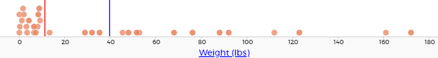

Measures of Center
Students are introduced to mean, median and mode(s) and consider which of these measures of center best describes various quantitative data.
|
Lesson Goals |
Students will be able to…
|
|
Student-facing Lesson Goals |
|
|
Materials |
|
|
Preparation |
|
mean-
a representation of the center, or 'typical' value in a set of numbers, calculated as the sum of those numbers divided by the number of values.
median-
the middle element of a quantitative dataset
mode-
the most commonly appearing categorical or quantitative value or values in a dataset
outlier-
observations whose values are very different from the other observations in the same dataset, perhaps due to experimental error. Outliers can also be indicative of data belonging to a different population from the rest of the established samples.
quantitative data-
number values for which arithmetic makes sense
skew-
lack of balance in a dataset’s shape, arising from more values that are unusually low or high. Such values tend to trail off, rather than be separated by a gap (as with outliers).
| Mean | 15 minutes |
Overview
Students learn about mean (or "average"), and how it is one way (among others!) to summarize a quantitative column.
Launch
According to the Animal Shelter Bureau, the average pet weighs almost 41 pounds.
Some medicines are dosed by weight: heavier animals need a larger dose that could be dangerous for smaller animals. If someone from the shelter needs to give a dose of medicine to the animals, is the “average” the best estimate we can use?
“The average pet weighs 41 pounds” is a statement about the entire dataset, which summarizes a whole column of values with a single number. Summarizing a big dataset means that some information gets lost, so it’s important to pick an appropriate summary. Picking the wrong summary can have serious implications! Here are just a few examples of summary data being used for important things. Do you think these summaries are appropriate or not?
-
Students are sometimes summarized by two numbers — their GPA and SAT scores — which can impact where they go to college or how much financial aid they get.
-
Schools are sometimes summarized by a few numbers — student pass rates and attendance, for example — which can determine whether or not a school gets shut down.
-
Adults are often summarized by a single number — like their credit score — which determines their ability to get a job or a home loan.
-
When buying uniforms for a sports team, a coach might look for the most common size that the players wear.
Can you think of other examples where someone uses a number or two to summarize something complex?
Every kind of summary has situations in which it does a good job of reporting what’s typical, and others where it doesn’t really do justice to the data. In fact, the shape of the data can play a huge role in whether or not one kind of summary is appropriate!
One of the ways that Data Scientists summarize quantitative data is by talking about its center - literally asking "what is a typical value in this sample?", in the hopes of inferring something about a larger population. But there are many different ways to define "center", and each method has strengths and weaknesses. Let’s check the “41 pounds” claim and see if it’s an appropriate measure of center. Later on, you’ll have a chance to apply what you’ve learned to your own dataset, to find the best way to provide an overall summary of the data.
|
Kinesthetic Activity If you have a set of rulers, divide the class into groups such that every group has a ruler. Give each group 4-8 pennies and make sure every group has at least one pen or pencil. The arithmetic mean is the number that "balances" all the other numbers in the sample. So let’s do some real balancing!
|
Investigate
Before digging into a discussion of mean, let’s look at a visual.
If we plotted all the animals' weights as points on a number line, it would look something like this:

{kind=link}
-
Do you think there is a midpoint?
-
There are 32 animals - meaning that there is not one point in the middle.
-
-
Is there a point that shows up most often?
-
Since we see that dots are stacked up, it seems likely that there is some repetition in the animals' weights.
-
-
What do you think the red line represents? How about the blue one? How do you know?
-
Be sure to solicit students' answers, which may vary. Red is the median, blue is the mean. Uncertainty at this point is okay! The remainder of the lesson is an exploration of these concepts.
-
Each of these are different ways of “measuring center”.
The Animal Shelter Bureau used one method of summary, called the mean, or "average". The mean of a dataset is the sum of values divided by the number of values. To take the average of a column, we add all the numbers in that column and divide by the number of rows.
Pyret has a way for us to compute the mean of any quantitative column in a Table. It consumes a Table and the name of the column you want to measure, and produces the mean — or average — of the numbers in that column.
# mean :: Table, String ‑> Number
-
What is the function’s name? Domain? Range?
-
The function’s name is
mean. The function consumes a table and string (domain), and produces a number (range).
-
Notice that calculating the mean requires being able to add and divide, so the mean only makes sense for quantitative data. For example, the mean of a list of Presidents doesn’t make sense. Same thing for a list of zip codes: even though we can divide a sum of zip codes, the output doesn’t correspond to some “center” zip code.
-
Type
mean(animals-table, "pounds"). What does this give us?-
39.715625.
-
-
Does this support the Bureau’s claims?
-
No, the mean is less than 41 pounds.
-
-
Now, turn to Summarizing Columns in the Animals Dataset. In the “measures of center” section, fill in the computed mean.
| Median | 15 minutes |
Overview
Students learn a second measure of center: the median. They learn the algorithm and the code to find the median, as well as situations where taking the median is more appropriate than the mean.
Launch
You computed the mean of that column to be almost exactly 41 pounds. That IS the average, but if we scan the dataset we’ll quickly see that most of the animals weigh less than 41 pounds! In fact, more than half of the animals weigh less than just 15 pounds. What is throwing off the average so much?
Kujo and Mr. Peanutbutter!
In this case, the mean is being thrown off by a few extreme data points. These extreme points are called outliers, because they fall far outside of the rest of the dataset. Calculating the mean is great when all the points are fairly balanced on either side of the middle, but it distorts things for datasets with extreme outliers. The mean may also be thrown off by the presence of skewness: a lopsided shape due to values trailing off to the left or right.
-
Make a
histogramof thepoundscolumn, and try different bin sizes. -
Can you see the huge number of animals clumped to the left, with Kujo and Mr. Peanutbutter as outliers skewed to the right?
A different way to measure center is to line up all of the data points — in order — and find a point in the center where half of the values are smaller and the other half are larger. This is the median, or “middle” value of a list.
As an example, consider this list of ACT scores:
25, 26, 28, 28, 28, 29, 29, 30, 30, 31, 32
Here 29 is the median, because it separates the "bottom half” (5 values below it) from the top half” (5 values above it).
The algorithm for finding the median of a quantitative column is:
-
Sort the numbers
-
Cross out the highest and lowest number
-
Repeat until there is only one number left…
-
When there are an even number of numbers in the list, as in the example below, there will be two numbers left at the end. Take the mean of those two numbers.
3, 7, 9, 21
The median of this list is 8, because 8 is the mean of the two middle numbers, 7 and 9. To find their mean, we added 7 and 9 to get 16 and split 16 in half.
Investigate
-
Pyret has a function to compute the median of a list as well. Find the contract in your contracts page.
-
Compute the median for the
poundscolumn in the Animals Dataset, and add this to Summarizing Columns in the Animals Dataset.-
The median is 11.3.
-
-
Is it different than the mean?
-
Yes, it is very different!
-
-
What can we conclude when the mean is so much greater than the median?
-
There are some very heavy animals that are causing the mean to be higher.
-
-
For practice, compute the mean and median for the weeks and age columns.
-
Weeks: mean - 5.75; median - 4. Age: mean - 4.359375; median - 3.
-
Synthesize
By looking at the histogram, we can see that it’s probably better to use the mean or median.
Strong left skewness and/or low outliers can pull the mean down below the median, while right skewness and/or high outliers can pull it up above the median.
Mean is generally the best measure of center, because it includes information from every single point. But it’s inaccurate for highly-skewed datasets, so statisticians fall back to the median.
| Modes | 25 minutes |
Overview
Students learn about the mode(s) of a dataset, how to compute the mode, and when it is appropriate to use this as a measure of center.
Launch
The third measure of center is called the modes of a dataset. The modes of a dataset are the values that appear most often.
Median and Mean always produce one number and many datasets are what we call “unimodal”, having just one mode. But sometimes there are exceptions!
-
If two or more values are equally common, there can be more than one mode.
-
If all values are equally common, then there is no mode at all!
Consider the following three datasets:
1, 2, 3, 4
1, 2, 2, 3, 4
1, 1, 2, 3, 4, 4-
The first dataset has no mode at all!
-
The mode of the second dataset is 2, since 2 appears more than any other number.
-
The modes (plural!) of the last dataset are 1 and 4, because 1 and 4 both appear more often than any other element, and because they appear equally often.
Mode is rarely used to summarize quantitative data. It is very common as a summary of categorical data, telling us which category occurs most often.
In Pyret, the mode(s) are calculated by the modes function, which consumes a Table and the name of the column you want to measure, and produces a List of Numbers.
# modes :: Table, String ‑> List<Number>
Investigate
-
Compute the
modesof thepoundscolumn, and add it to Summarizing Columns in the Animals Dataset. What did you get?-
0.1 and 6.5
-
Synthesize
The most common animal weights are 0.1 and 6.5! That’s well below our mean and even our median, which is further evidence of outliers or skewness.
At this point, we have a lot of evidence that suggests the Bureau’s use of “mean” to summarize animal weights isn’t ideal. We have three reasons to suspect that mean isn’t the best value to use:
-
The median is only 11.3 pounds.
-
The modes of our dataset are 6.5 pounds and 0.1 pounds, which suggests a cluster of animals that weigh less than one-sixth the mean.
-
When viewed as a histogram, we can see the right skewness and high outliers in the dataset. Mean is sensitive to datasets with skewness and/or outliers.
“In 2003, the average American family earned $43,000 a year — well above the poverty line! Therefore very few Americans were living in poverty."
Do you trust this statement? Why or why not?
-
Sample response: The mean is sensitive to outliers, and billionaires like Elon Musk, Jeff Bezos, etc. pull the mean is heavily to the right. This makes it appear that the "average" American family earns far more than they actually do. That’s why the conclusion "very few Americans were living in poverty" cannot be drawn based on the mean.
Consider how many policies or laws are informed by statistics like this! Knowing about measures of center helps us see through misleading statements.
You now have three different ways to measure center in a dataset. But how do you know which one to use? Depending on the shape of the dataset, a measure could be really useful or totally misleading! Here are some guidelines for when to use one measurement over the other:
-
If the data doesn’t show much skewness or have outliers, mean is the best summary because it incorporates information from every value.
-
If the data has noticeable outliers or skewness, median gives a better summary of center than the mean.
-
If there are very few possible values, such as AP Scores (1–5), the mode could be a useful way to summarize the dataset.
NOTE: We strongly recommend having students practice the Data Cycle with measures of center, using Data Cycle: Measures of Center. Sometimes what’s created isn’t a table or a display, and this activity demonstrates that. It also drives home an important difference between Arithmetic and Statistical Questions.
🔗Additional Exercises
These materials were developed partly through support of the National Science Foundation,
(awards 1042210, 1535276, 1648684, and 1738598).  Bootstrap by the Bootstrap Community is licensed under a Creative Commons 4.0 Unported License. This license does not grant permission to run training or professional development. Offering training or professional development with materials substantially derived from Bootstrap must be approved in writing by a Bootstrap Director. Permissions beyond the scope of this license, such as to run training, may be available by contacting contact@BootstrapWorld.org.
Bootstrap by the Bootstrap Community is licensed under a Creative Commons 4.0 Unported License. This license does not grant permission to run training or professional development. Offering training or professional development with materials substantially derived from Bootstrap must be approved in writing by a Bootstrap Director. Permissions beyond the scope of this license, such as to run training, may be available by contacting contact@BootstrapWorld.org.